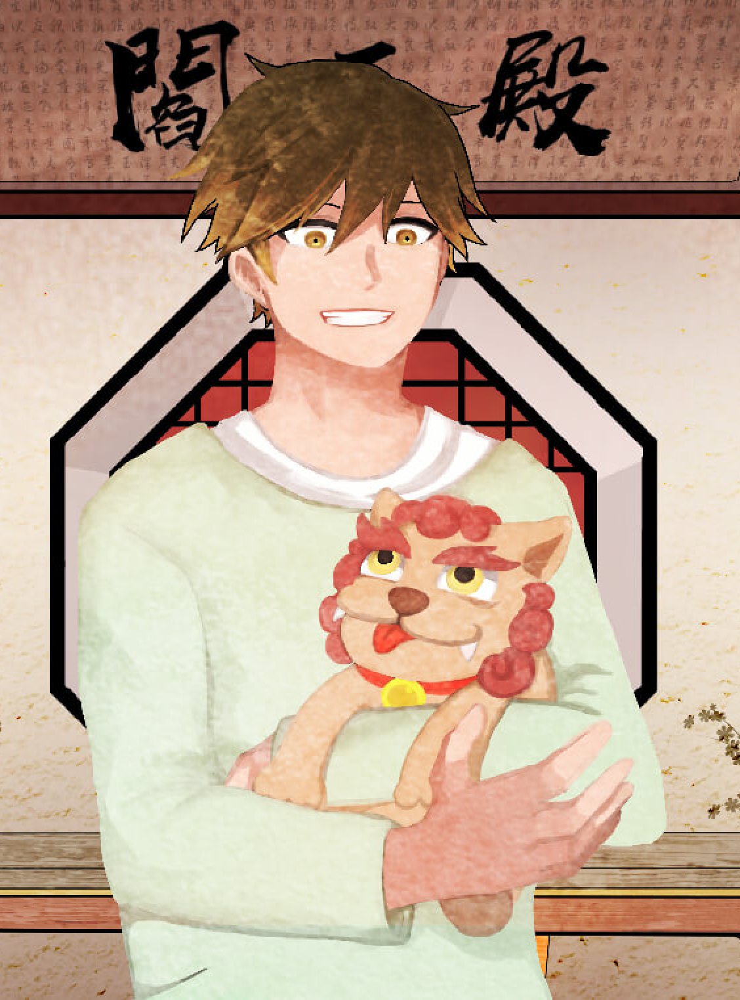

「石獅寺有四十四隻石獅子，四十四隻石獅子吃四十四枝芋仔冰芋仔冰好好吃我也好想吃喔端湯上塔？」
聲優
單句試聽 🔉簡介
靈陽是一個經常陷入自己世界的鬼，充滿了靈感跟幻想，擁有與其他鬼精神相通的能力，可以看到對方生前記憶跑馬燈 的部分影像。不過這個能力不太穩定，還有待鍛鍊。
生前故事
出生在一個家人不是公務員就是會計師的家庭，但他偏偏展露出獨特的美術天賦，而且還有陰陽眼跟感應 能力。長大之後變成圖文作家，有一天突然遭到某起命案冤魂託夢，不得不介入這起案件，結果招來橫禍。